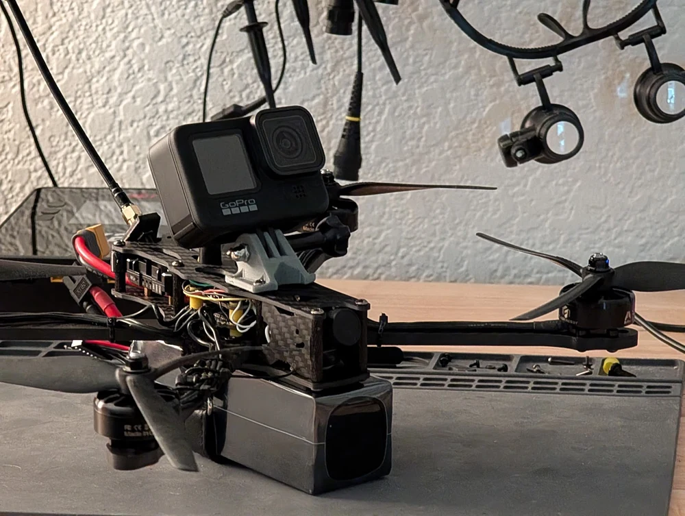
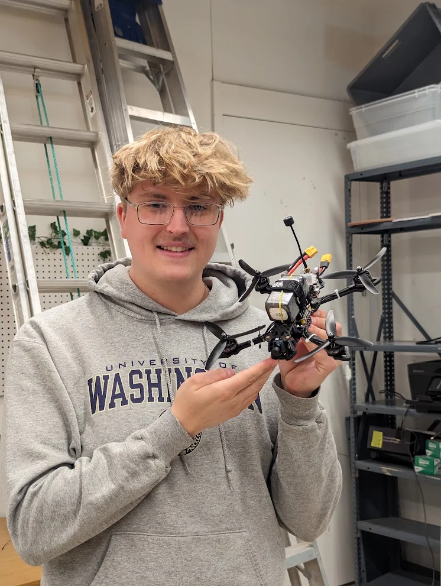
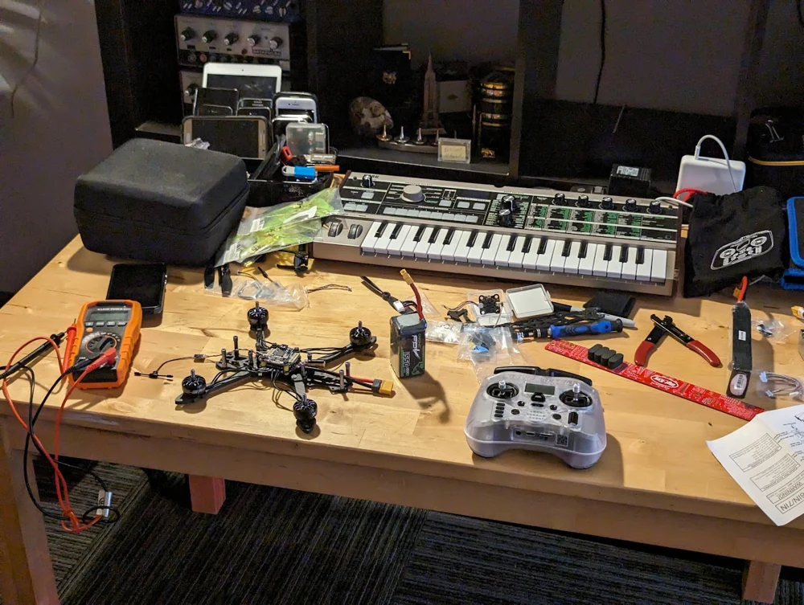
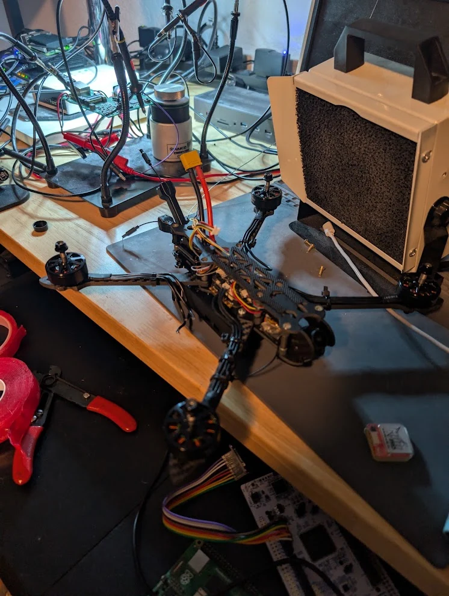
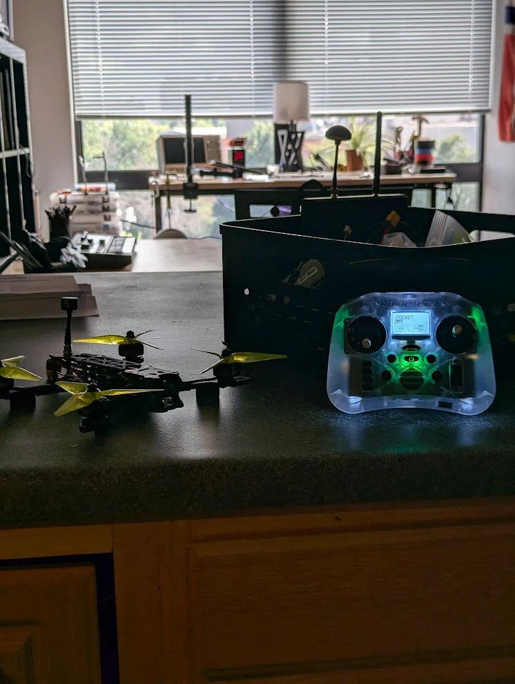
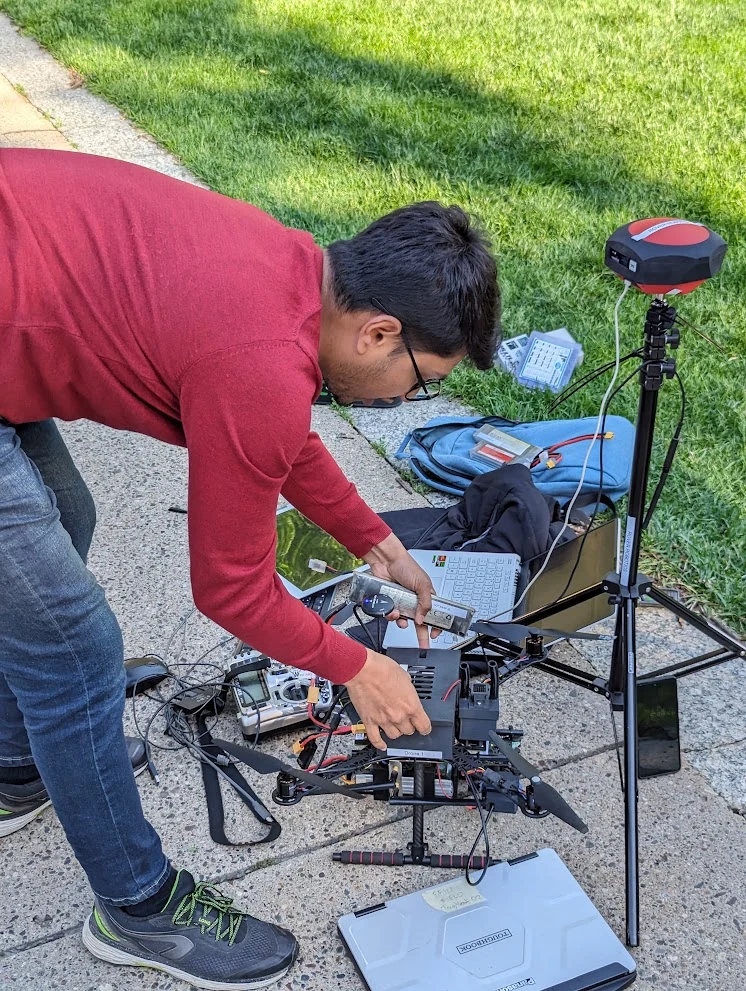
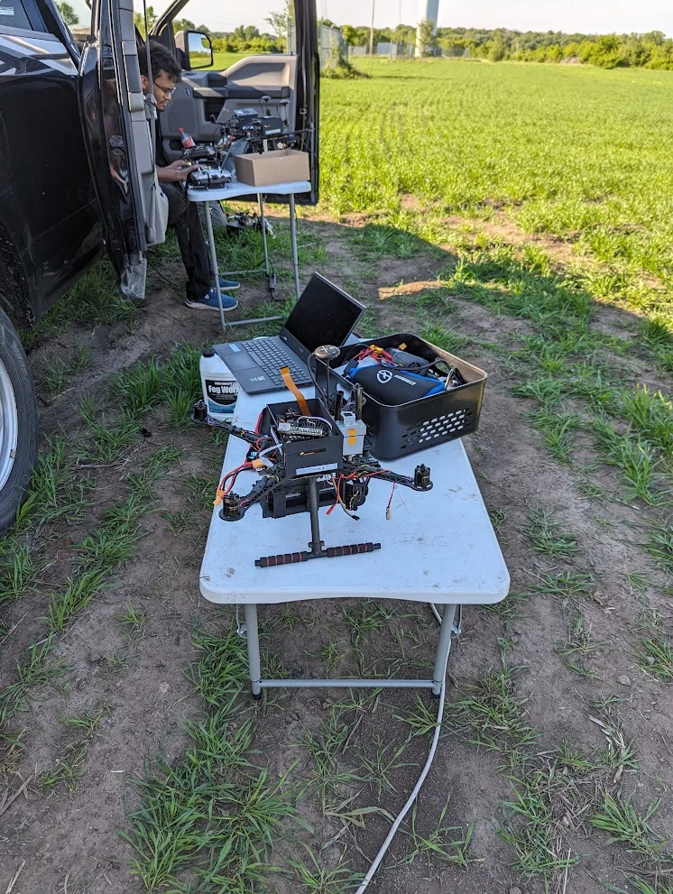
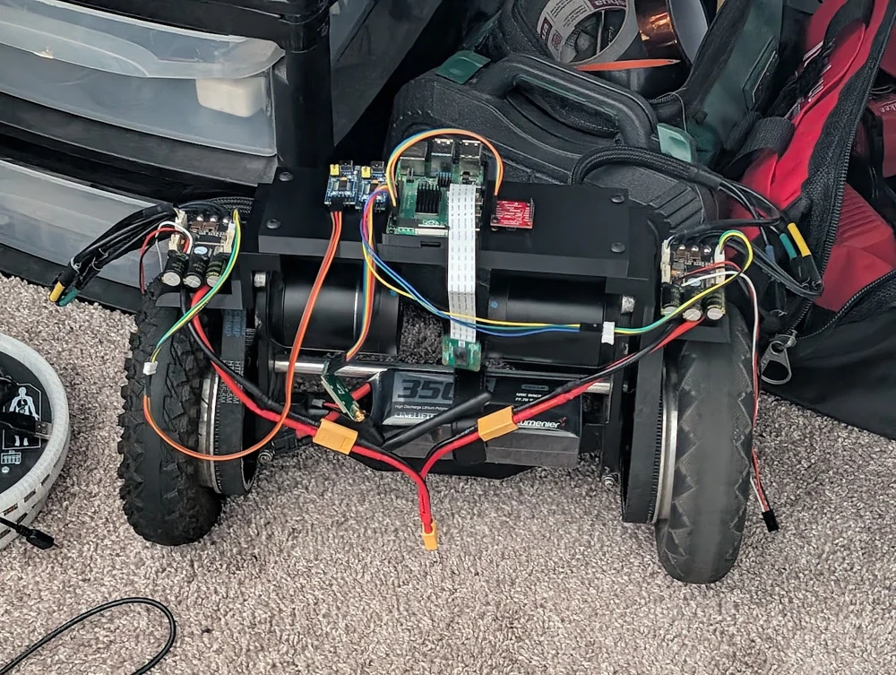
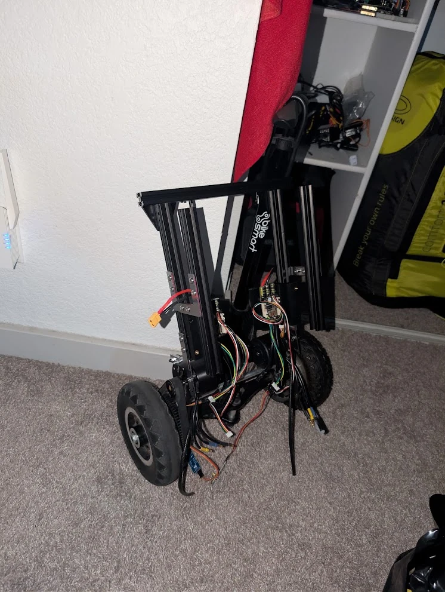
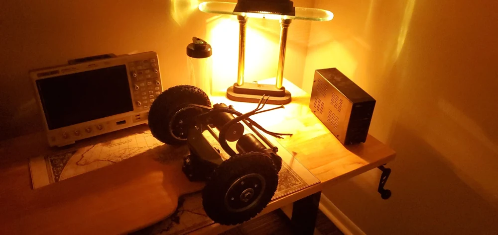

Vehicle integration / Electric drivetrains / Remote operation
Electric Drives & Control
Electric vehicles, custom batteries, FPV drones, and a VESC-based rover.
I build and modify electric vehicles, applying the same fundamentals of batteries, motor controllers, drivetrains, and control across ground vehicles and FPV drones.
This work spans an electric mountain board assembled from off-the-shelf parts, a self-balancing vehicle with a custom battery, Onewheel modifications, and custom FPV drone rigs for filming, racing, and recreational flight.
My current rover work uses VESC motor controllers for remote operation and exploration. The photos below document FPV builds and field work alongside the mountain board, two-wheel prototypes, and rover hardware.
Drone builds & field work
I build custom FPV rigs for filming, racing, and recreational flight. These photos follow the work from assembly and camera integration to outdoor setups and field preparation.















IN DEVELOPMENT
Remote exploration rover
I am developing a VESC-based rover for remote operation and exploration. This photograph documents the current hardware prototype.

DRIVETRAIN INTEGRATION
From components to a working vehicle
I assembled the electric mountain board from off-the-shelf parts, integrating the battery, motor control, and drivetrain. The close-up shows the mechanical and electrical assembly.
I later reused mountain-board components in a self-balancing vehicle with a custom battery.

CONTROL
The rider interface
The handheld controller is part of the complete board system, connecting rider input with the motor controller. Integrating control, power, and mechanics is the common thread through these builds.
Two-wheel prototypes
Chassis assembly, battery placement, motor controllers, and wiring across the builds.






